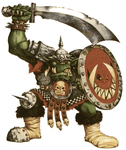
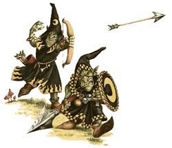

| |
Az ork és
goblin seregekre vonatkozó speciális szabályok
Az orkok,
goblinok és kisebb unokatestvéreik a snotlingok
egyforma kémiai felépítésûek. Ezek a zöldbõrû,
merész harcosok tartják rettegésben az egész
kontinenst. Az orkokat csak a háborúskodás élteti,
és ez teszi õket olyan veszélyessé, de ez az
egyik gyengeségük is, mivel elõszeretettel
csapják el idejüket egymás fejének péppé verésével.
A goblinok valamivel okosabbak nagyobb testvéreiknél.
Nem túl erõsek, inkább ravasz cselekkel oldják
meg az ebbõl adódó problémákat.
A zöldbõrûekrõl:
| Az orkok sok
mindenben különböznek az embertõl és
az emberszerû lényektõl. Ezeket a különbségeket
évek óta tanulmányozzák az emberek
alkimistái és nekro- mantái, akik az
orkok kimondhatatlan nevû mágiáját
is megpróbálták már hasznosítani,
eddig kevés sikerrel. A Birodalom
halott ork harcosok boncolásával próbálnak
meg többet megtudni a fajról oly
korban, ahol az embe- ri anatómia is
csodának számít és spekulációkra
ad okot. Az orkok belsõ felépítése
rengeteg vita alapját képezi, de annál
kevesebb bizonyos ténnyel szolgál.
Egyes idióta vélemények szerint az
orkok démonok porontyai vagy a gonosz
emberek rémálmainak testet öltött szörnyetegei.
Ezek persze teljesen nonszensz dolgok,
de sajnos kevés a józan, megfontolt vélemény.
A következõkben a racionálisabb és lényegre
törõ információkból közlünk néhányat. |
 |
Az orkoknak és rokonaiknak kemény,
viaszos bõre van, mely az idõ múlásával még
keményebb és rücskösebb lesz. Vérük színe a
vöröstõl a bíboron át a feketéig bármilyen
lehet. Nem éreznek fájdalmat, legalábbis nem
olyan mértékben mint az emberek. Testük gyorsan
gyógyul. Egyes pletykák szerit, ha egy orknak
levágják a kezét, csak visszailleszti a helyére
és az kisvártatva visszanõ. Senki nem tud erre
racionális magyarázatot adni, még maguk az
orkok sem, de az igazat megvallva, nem is igazán
foglalkoznak a dologgal.
Törzsek és hadvezérek:
Harci törzsekben
vagy bandákban élnek, melyek lélekszáma pár
száztól a több ezerig terjedhet. A törzset
hatalmas erõs fõnök, a Hadvezér irányítja. A
legsikeresebb Hadvezér törzséhez akar minden
ork és goblin csatlakozni. Ahogy nõ a törzs létszáma,
egyre nagyobb és nagyobb csatákat vívnak, és
ebbõl adódóan egyre erõsebbek és híresebbek
lesznek. Ha vezetõjük meghal, a törzs részekre
szakad.
Az orkok
a küzdelemnél jobban semmit sem szeretnek. A
sikeres hadvezér egyre veszélyesebb ellenfeleket
keres katonáinak, míg el nem jut addig a pontig,
hogy egy hatalmas birodalmi vagy bretonniai
hadsereggel állnak szembe. Ugyan a törzsek egymás
közötti harca szakadatlan, goblinokbók és
orkokból nincs hiány.
Elõfordulás:
Az orkok
és goblinok Óvilág szinte minden pontján elõfordulnak,
még olyan helyeken is, ahol az ember nem maradna
sokáig életben. Ha az orkok szülõföldjérõl
beszélünk, általában a Világvége Hegység és
a Fekete Hegység között elterülõ Rosszföld,
illetve a Vérfolyó melletti Fekete Tûz csapás
környéke jut eszünkbe.
Orkok:
Az orkok
képezik a faj többségét, és csak utánuk következnek
a goblinok. Az orkok nem magasabbak egy átlag
embernél, de sokkal nagyobbak, robosztusabbak. Az
átlag ork magasság általában 7 láb alatt van.
Nagy hordó-mellkasuk masszív lábakon nyugszik,
és hosszú, izmos kezeik vannak. Nagy fejükön
óriási száj lapul, melybõl kiállnak tekintélyt
parancsoló agyaraik.
Az orkok,
bár mindenki ezt hiszi, nem hülyék. Csak minden
idejüket leköti a háborúskodás és így nincs
idejük mélyebb értékû gondolatokkal
foglalkozni. Az egész életük a harc körül
forog. Ha egy ork kiemelkedik harci tudásával a
többiek közül, és nincs aki legyõzné,
hamarosan a törzse vezetõjévé, Fõnökévé válik.
Ha már a törzse elég nagyra duzzadt, az általa
elért hadi sikerek miatt, Nagyfõnök válik belõle,
aki a környék összes orkjának és goblinjának
parancsol.
Amennyiben
egy ork már kiirtotta az összes lehetséges riválisát,
és az összes környékbeli törzs felett
vasmarokkal és megingathatatlanul uralkodik,
Hadvezér válhat belõle. És lehetõsége lesz rá,
hogy nagy csatákat vívjon, egyre nagyobb és erõsebb
ellenfeleket pusztítva el, amíg végül el nem
bukik.
| Egység |
M |
Ws |
Bs |
S |
T |
W |
I |
A |
Ld |
| Orc |
4 |
3 |
3 |
3 |
4 |
1 |
2 |
1 |
7 |
| Boss |
4 |
4 |
4 |
4 |
4 |
1 |
3 |
2 |
7 |
| Big Boss |
4 |
5 |
5 |
4 |
5 |
2 |
4 |
3 |
8 |
| War Boss |
4 |
6 |
6 |
4 |
5 |
3 |
5 |
4 |
9 |
| |
|
|
|
|
|
|
|
|
|
| Shaman |
4 |
3 |
3 |
3 |
5 |
1 |
3 |
1 |
7 |
| Shaman Champion |
4 |
3 |
3 |
4 |
5 |
2 |
3 |
1 |
7 |
| Master Shaman |
4 |
3 |
3 |
4 |
5 |
3 |
4 |
2 |
7 |
| Shaman Lord |
4 |
3 |
3 |
4 |
5 |
4 |
5 |
3 |
8 |
Goblinok:
A
goblinok sokkal kisebbek mint az orkok vagy az
emberek. Kicsiny, ügyes ujjaik kiválóan alkal-
masak kisebb állatok elejtésére, vagy alvó riválisaik
jobb létre szenderítésére.
| Apró
szemeikkel kiválóan látnak a sötétben.
Sokkal halkabbak és mozgékonyabbak a
lassúbb orkoknál. Gondolkodásuk és
intelligenciájuk pedig messze az orkoké
felett áll. Törzseik gyakran vándorolnak,
nomád életet folytatva, csereberélésbõl
és lopásokból tartva el magukat. Ezek
a vándorló goblin törzsek gyakran
nagy karavánokat állítanak össze az
eladásra szánt termé- kekbõl,
befogott szörnyekbõl és rabokból.
Ezeket a karavánokat sokszor óriási
farkasokon lovagló felde- rítõk
veszik körül, ellenség, és kisebb
kifosztható falvak után kutatva. |
 |
Néhány
goblin õsi, rég elfeledett földalatti járatokban
húzta meg magát, míg mások sûrû erdõkben
kerestek maguknak menedéket. Az elõbbiek az éjgoblinok,
míg az utóbbiak az erdei goblinok.
| Egység |
M |
Ws |
Bs |
S |
T |
W |
I |
A |
Ld |
| Goblin |
4 |
2 |
3 |
3 |
3 |
1 |
2 |
1 |
5 |
| Boss |
4 |
3 |
4 |
4 |
3 |
1 |
3 |
2 |
5 |
| Big Boss |
4 |
4 |
5 |
4 |
4 |
2 |
4 |
3 |
6 |
| War Boss |
4 |
5 |
6 |
4 |
4 |
3 |
5 |
4 |
7 |
| |
|
|
|
|
|
|
|
|
|
| Shaman |
4 |
2 |
3 |
3 |
4 |
1 |
3 |
1 |
5 |
| Shaman
Champion |
4 |
2 |
3 |
4 |
4 |
2 |
3 |
1 |
5 |
| Master Shaman |
4 |
2 |
3 |
4 |
4 |
3 |
4 |
2 |
5 |
| Shaman Lord |
4 |
2 |
3 |
4 |
4 |
4 |
5 |
3 |
6 |
Zöldbõrû társadalom:
A két
nemzettség, az orkoké és a goblinoké külön
él, de nem ritka egy-egy goblin szolga látványa
az ork településeken. Az esetek túlnyomó többségében
a goblin elégedett a helyzetével, mivel tudja,
hogy a gazdái kitûnõ harcosok, jobbak mint õ,
ezért nem érdekli az sem, ha a fülénél fogva
vonszolják végig a táboron keresztül.
Az orkok
és goblinok egymás közt kereskednek, mivel az
emberek és más fajok erre nem igen hajlandóak.
Sokféle ork és goblin létezik. Ezek általában
kisebb eltérések, így inkább testvéri
kapcsolatról kell beszélnünk, mintsem faji különbségekrõl.
Nem sok
fajjal tartanak fent kapcsolatot. Közeli rokonaik
a snotlingok. Trollokkal is üzletelnek, bár inkább
háziállatként bánnak velük. Néha ogre bandákat
bérelnek fel bizonyos feladatok végrehajtására.
A legösszetettebb kapcsolatuk a Káosz törpékkel
van. Õk tanították meg az orkokat az acél
használatára, a fegyvergyártásra és különbözõ
harci gépek készítésére. Napjainkban is
gyakran kereskednek velük - aranyat vesznek a
goblinoktól és továbbadják az orkoknak. Ha Káosz
törpe mágus látogat el táborukba, nagy
tisztelettel és megbecsüléssel bánnak vele.
Speciális szabályok:
Pánik
Az orkok
jól ismerik a goblinok mentalitását, így nem
éri õket meglepetés, ha menekülni látják õket
csata közben. Ha egy goblin csapat a csata alatt
menekülésbe kezd, az orkoknak nem kell pániktesztet
végezniük. Nem izgatja õket a dolog.
Félelem
A
goblinok nem szeretnek elfekkel harcolni, azok hírneve
és megmagyarázhatatlan aurája félelmet vált
ki belõlük.
Ellenségeskedés
Nem
ritka, mikor két rivális vagy akár két törzs
a legváratlanabb helyzetben egymásnak ront. Ez különösen
annak az ork vezérnek kellemetlen, kinek legszebb
haditerve megy csõdbe pár idióta, egymást püfölõ
katonája miatt. Annak a játékosnak aki ork vagy
goblin sereggel játszik, minden kör elején
tesztet kell dobnia, hogy lesz-e balhé a bandán
belül vagy sem.
Minden
goblin és ork egység dob 1D6-ot, ha 2 és 6 között
van a szám, minden rendben, és folytatódhat a
harc. Ha 1-est dobtál valami gáz van. Dobj mégegyszer
és nézd meg az eredményt az alábbi táblázaton:
| Dobott
érték |
Esemény |
|
1
|
Kapjuk' ee: A problémás
osztaghoz legközelebbi egység gri-
maszol, káromkodik, inzultálja a
bandát. Ez megtorlást követel!
Ha a sértett osztagot íjászok
alkotják nem mozdulhatnak a kör-
ben, csak lõhetnek, de csak
civakodó társaikra, így ha kell for-
dítsuk "ellenfeleik"
felé õket. Ha nem lõfegyverrel vannak
felsze-
relve, azonnal lerohanják társaikat
és addig csépelik egymást,
míg szét nem verték a másik
fejét. Ilyenkor a közelharcon kívül
mást nem tehetnek. Miután mindkét
fél kellõképpen kidühöngte
magát, a kör hátralévõ részében
képtelen mozogni vagy bármit is
csinálni. |
|
2-5
|
Valamilyen külsõ hatás
megzavarja a csapat sorait és megtagad-
ják a mozgásra vagy a harcra
utasító parancsot, míg vezérük
rájuk nem ordít. Ez egy körig
tart. |
|
6
|
Maj'mi megmutattyuk! : A
legközelebbi osztag fennhangon
közli, hogy szerintük ki viszi
sikerre a csapatot (persze magukra
céloznak). A sértett csapat
megmutatja, hogy õk sokkal beleva-
lóbb fickók és nemcsak a szájuk
nagy. A tereptõl függetlenül az
ellenség felé rohannak . Nem
kapnak M pont levonást, de a
maximumot kell teljesíteniük. A
mozgás fázis elõtt hajtsd végre a
fentieket. A mozgás fázisban újra
léphetnek, sõt rohamozhatnak
is, persze csak rohamtávon belül. |
Pontértékek:
Black
Ork: 7 pont, Boss: 42
pont, Big Boss: 91 pont,
War Boss: 140 pont,
Goblin: 2.5
pont, Boss: 15 pont, Big
Boss: 33 pont, War Boss: 50
pont,
Goblin
fanatikus: 30 pont,
Ork, vad
Ork: 5.5 pont, Boss: 33
pont, Big Boss: 72 pont, War
Boss: 110 pont,
Goblin
Shaman: 28 pont, Shaman Champion:
83 pont, Master Shaman: 159 pont,
. Shaman Lord: 253 pont,
Ork Sámán:
57 pont, Shaman Champion: 118
pont, Master Shaman: 211 pont, Shaman
Lord: 287 pont.
Az
összeállítás a magyar nyelvû szabálykönyv
alapján készült
|
|